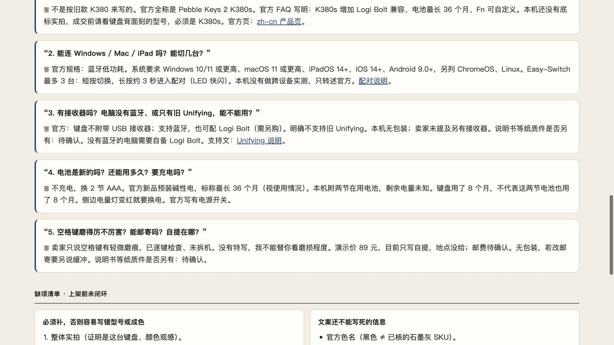
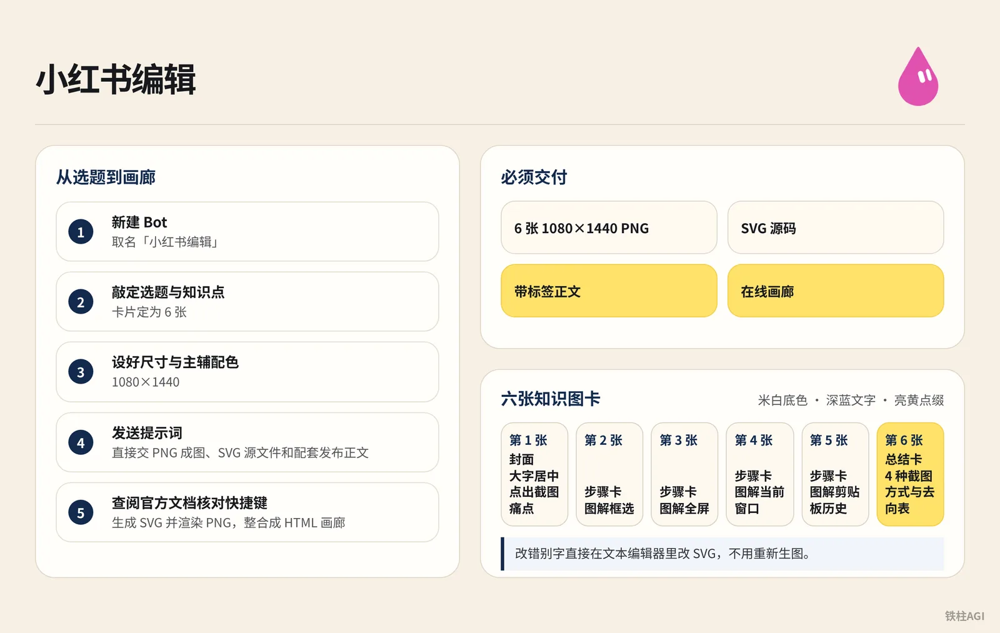
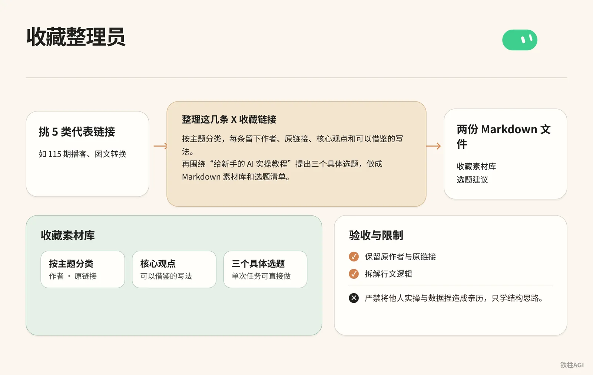
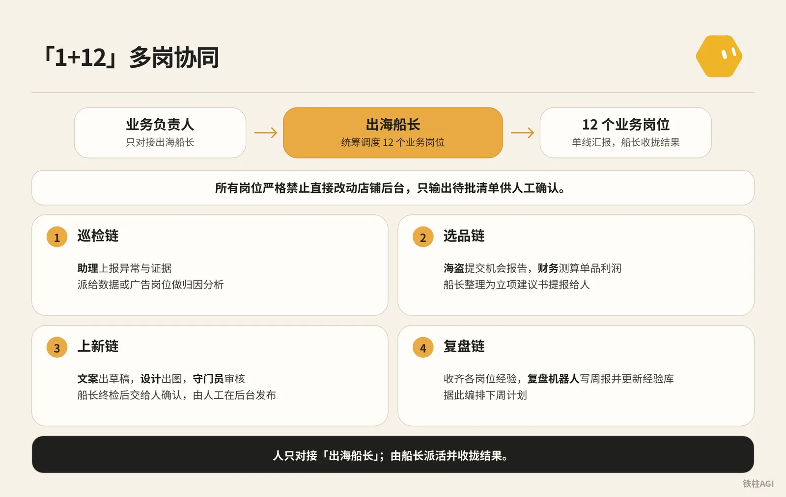
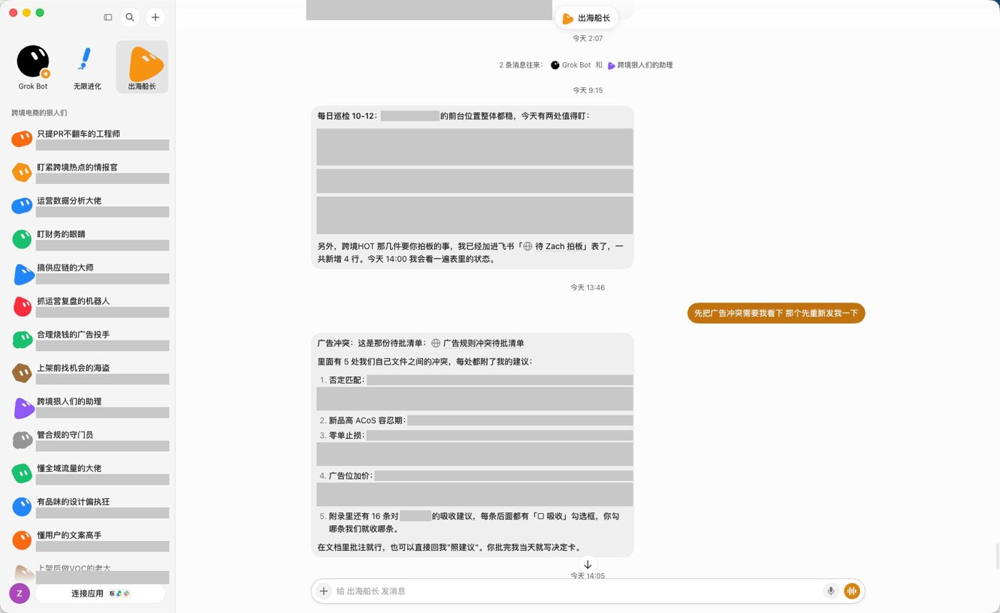

铁柱AGI · 30/60
第 15 章 案例：电商与生活实操
单开网页对话框容易丢记录，还得多头切软件搬运。这章带你用现成方案跑通流程。
- 生活与内容：拿成熟提示词 (prompt (the instruction you give the AI))生成闲鱼文案、小红书排版和 SVG 图卡，不再手动对齐。
- 跨境电商：从单机巡检起步，搭出 「1 船长 + 12 岗位」团队，用待批清单人工把关。
案例 1：闲鱼上架员（二手闲置资料板与咨询草稿）
Miles Ma（@miles_mazy，灵感源自 @0xlangeai）做了这个 Bot。卖二手直接丢给 AI 容易被瞎编成全新配置。它把实况与官网参数分流，生成双栏资料板和回复草稿。
步骤与验收
- 拍好正面、瑕疵特写和铭牌，理清配件、自提方式与售价。
- 在 Grok Bot 侧边栏点
+选「新建 Bot」，起名「闲鱼上架员」。 - 上传实拍图发提示词，以标价 89 元二手罗技 K380s 键盘为例。
帮我做一份闲鱼上架资料。商品是罗技 K380s，黑色，用了 8 个月，空格键有轻微磨痕，逐键输入正常，没拆过机；附两节在用电池，无包装，卖 89 元，支持自提，邮费待确认。查官方型号资料，整理标题、商品描述、需要补拍的照片和常见咨询回复，做成可打开的资料板，并附可复制的上架正文。没提供的信息标为待确认。- Bot 联网查官网参数，生成 HTML 资料板与纯文本草稿。
来源：Grok Bot 应用指南实操案例：闲鱼上架、小红书做图、找工具、做短视频、整理收藏
作者：Miles Ma @miles_mazy


- 左侧放卖家实况，右侧放标价、成色与配件。
- 参数与磨损单列，未提供信息一律标为「待确认」，禁止脑补。
- 补图清单列缺漏视角，客服回复覆盖连接、切换与自提。
- 案例参考 《Grok Bot 应用指南实操案例：闲鱼上架、小红书做图、找工具、做短视频、整理收藏｜Miles Ma》。
案例 2：小红书编辑（从选题到六张知识图卡与画廊）

制作步骤
- 在 Grok Bot (xAI's AI assistant that comes with its own computer) 侧栏新建 Bot，取名「小红书编辑」。
- 敲定选题与知识点，把卡片定为 6 张，设好 1080×1440 尺寸与主辅配色。
- 进入对话界面，发送提示词：
给电脑新手做一套小红书图文，主题是“Windows 截图后，图片去哪了”。查微软官方资料，做 6 张 1080×1440 的图：封面、框选截图、整屏保存、当前窗口、剪贴板历史、快捷键对照表。用米白、深蓝和亮黄，文字清楚，配操作示意。直接交 PNG 成图、SVG 源文件和配套发布正文，再做一个能看全套图片的画廊。- Bot 会查阅官方文档核对快捷键，生成 SVG 并渲染 PNG，整合成 HTML 画廊。
验收与避坑
| 卡片 | 内容与排版 |
|---|---|
| 第 1 张 | 封面，大字居中点出截图痛点 |
| 第 2-5 张 | 步骤卡，图解框选、全屏等截图方式 |
| 第 6 张 | 总结卡，4 种截图方式与去向表 |
- 全套卡片采用米白底色配深蓝文字，亮黄点缀。必须交付 6 张 1080×1440 PNG、SVG 源码、带标签正文与在线画廊。
- 截图自动落盘依赖系统相册设置，Win + V 查历史必须提前打开开关，且记录未被覆盖。
- 改错别字直接在文本编辑器里改 SVG，不用重新生图。
参考案例：《Grok Bot 应用指南实操案例：闲鱼上架、小红书做图、找工具、做短视频、整理收藏｜Miles Ma》
案例 3：工具情报员（按用途筛选的软件分析简报）
Miles Ma 做的「工具情报员」Bot，专门抓取开源仓库与文档，生成支持分类筛选的网页卡片简报。
工具限制与推荐任务
| 工具 | 门槛与依赖 | 主要限制 | 推荐任务 |
|---|---|---|---|
| PowerToys | Windows 安装包直接运行 | 仅限 Windows，部分实验功能偶发不稳定 | 快捷键提取文字或置顶窗口 |
| MarkItDown | 依赖 Python 或命令行 | 复杂图文版面识别率有限 | 批量转 Word 与 PDF 为 Markdown (a simple way to format text with symbols) |
| changedetection.io | 需 Docker 或服务器环境 | 需运维基础，受反爬限制 | 监控电商价格标签变动 |
操作步骤
- 在 Grok Bot 侧栏新建 Bot，命名为「工具情报员」。
- 确定调研受众与目标工具清单。
- 进入对话界面发送提示词。
帮内容工作室整理 PowerToys、MarkItDown 和 changedetection.io，查官方仓库和文档。每个工具写清能帮忙做什么、上手需要什么、主要限制，再给一个具体使用例子。做成能按用途筛选的网页简报，附来源链接。- Bot 抓取仓库说明与依赖，编写包含筛选脚本的 HTML 简报存入工作区。
验收标准与避坑
- 每张卡片包含 6 项核心要素，覆盖工具定位、上手依赖，以及主要限制、实操任务与官网链接。
- 网页顶部设置分类按钮，能平滑筛选卡片。
- 限制说明务必客观，明确指出 changedetection.io 需 Docker 或服务器，不夸大为零门槛。
- 这属于案头筛选，Bot 不跑全流程实测，主要用来快速排除不符合门槛的候选软件。
《Grok Bot 应用指南实操案例：闲鱼上架、小红书做图、找工具、做短视频、整理收藏｜Miles Ma》
案例 4：视频教程师（可交互教学工具与带字幕短视频）
这是 Miles Ma（@miles_mazy，灵感源自 @0xlangeai 蓝哥 AI）的玩法。魔方顺逆转动与四次复位很难文字讲清，人工实拍又耗时。Grok Bot 能在云端写出交互网页，并自动录屏压制字幕。
怎么做
- 侧栏新建 Bot，命名为「视频教程师」。
- 每次只讲一个基础动作，避开全套还原算法。
- 发送提示词：
给孩子做一个魔方入门小工具，能认识六个面、点按钮演示右面顺转和逆转，再展示右面连续转四次回到原位。把实际操作录成一分钟左右的教学视频，加中文配音和字幕，交付视频和工具文件。- Bot 自动写网页、模拟点击并录屏，生成带中文字幕的视频。
做到什么程度算好
| 交付项 | 验收标准 |
|---|---|
| 交互网页 | 留存 HTML/JS 源码，点 R 换色，点 R' 复原，复位按钮四次归位，可离线打开 |
| 视频成片 | 约 51 秒 MP4 与 SRT 字幕，画面动作与字幕对齐 |
做后台演示或单点功能教学都能套用这个套路。
案例参考 《Grok Bot 应用指南实操案例：闲鱼上架、小红书做图、找工具、做短视频、整理收藏｜Miles Ma》。
案例 5：收藏整理员（把社媒收藏转化为选题素材库）

Miles Ma（@miles_mazy）做此 Bot，把收藏转成选题库。
操作步骤
- 侧栏新建 Bot，命名「收藏整理员」。
- 挑 5 类代表链接（如 115 期播客、图文转换）。
- 发送提示词：
整理这几条 X 收藏链接，按主题分类，每条留下作者、原链接、核心观点和可以借鉴的写法。再围绕“给新手的 AI 实操教程”提出三个具体选题，做成 Markdown 素材库和选题清单。- Bot 整理生成「收藏素材库」与「选题建议」两份 Markdown 文件。
验收与限制
- 验收：保留原作者与原链接，拆解行文逻辑，3 个选题收敛到单次任务可直接做。
- 限制：严禁将他人实操与数据捏造成亲历，只学结构思路。
《Grok Bot 应用指南实操案例：闲鱼上架、小红书做图、找工具、做短视频、整理收藏｜Miles Ma》
案例 6：亚马逊团队搭建（从前台巡检到「1+12」多岗协同）

背景与角色定位
- 谁：Zach（@1999Zach22）。
- 做了什么：将原先在本地 Claude/Codex 运行的 Skill (a saved how-to the bot can reuse) 全面迁移至 Grok Bot，在共享云电脑上搭建起「1 个出海船长 + 12 个业务岗位」的亚马逊跨境电商 AI 运营团队。
是什么
Codex CLI 这类本地工具得一直开机，出门没法看。Grok Bot 自带全天候美国云电脑，手机电脑互通，还能用真实买家账号在亚马逊前台浏览提问。
Zach 采用 「1 个船长 + 12 个业务岗位」 架构。你只对接出海船长，由船长统筹调度各岗位。
所有岗位严格禁止直接改动店铺后台，只输出待批清单供人工确认。
| 岗位 | 负责什么 | 严禁触碰的边界 |
|---|---|---|
| 出海船长 | 统筹调度下属，汇报周报与清单 | 不越过人直接做业务决策 |
| 助理 / 海盗 / VOC | 巡检跟卖、调研选品与分析差评 | 不登录卖家后台，不擅自立项 |
| 财务 / 广告投手 | 测算单品利润与出具广告建议 | 绝不登录后台改出价或加否词 |
| 文案 / 设计 / 守门员 | 输出文案、图片与合规终审 | 不直接发布上线，不替人拍板 |
| 复盘机器人 | 汇总周产出并更新经验库 | 不粉饰运营问题，不编造业绩 |
怎么做
1. 订阅方案与环境准备
- 入门选每月 30 美元 Premium 档（8 美元 Plus 档完全无 Bot），按需升 100 美元 Super 档或 200 美元 Ultra 档。
- 电脑手机登录同账号，确认云电脑正常运行。详见 Grok Bot 方案与用量指南。
2. 先用单 Bot 跑通三件事
用云电脑美国 IP 与浏览器跑通三项验证：
- 自家 Listing 日常巡检：查主图、价格、变体与跟卖，异常带对比证据汇报。
- 测试 Alexa 购物问答：登录买家号提问，实测约 8 分钟测完 8 类场景、查 30 天历史价格。
- 竞品定时盯盘：记录价格与优惠券，变动才发通知，无变动不打扰。
每天固定时间去前台检查自家 Listing：主图和价格是否正确，变体是否正常挂载，核心关键词是否能搜索到，是否存在跟卖。只记录指定商品和关键词，有异常才发提醒，并附带与前一日的对比数据和页面截图证据。不登录店铺后台，不执行任何写操作。从消费者的角度，尽可能多地把 Alexa for Shopping 体验一遍，最后给我一份报告。3. 拆解功能与岗位边界
- 跑通后将任务拆给 12 个业务岗。
- 广告与上新等敏感岗位明文禁止写入后台，一律交付「待批清单」，并设清请示边界。
你是合理烧钱的广告投手。负责分析广告效率、搜索词转化率、出价与预算建议。
边界约束：
1. 绝对不登录广告后台，不直接修改出价，不调整预算，不添加否定关键词，不新建广告活动；
2. 所有优化建议必须生成「待批清单」，每条建议必须附带调整依据和预期影响；
3. 待批清单单线交付给出海船长，由船长提报给业务负责人审核，严禁自主执行。4. 编排「1+N」交接链
- 千万别建多 Bot 群聊，群聊会重复接收上下文，极速消耗 Token (a small chunk of text; AI usage is counted in tokens)。
- 采用 1+N 架构，人只对接「出海船长」，由船长派活并收拢结果。
你是出海船长，负责统筹 12 个业务岗位。日常接收业务负责人的目标，拆解为具体子任务派发给对应岗位。所有下属岗位向你单线汇报，由你汇总结果、审核质量；不达标的打回重做，需要人工决策的整理为带选项和依据的待批清单汇报给人。严格遵守交接链规则：
1. 巡检链：助理上报异常与证据，派给数据或广告岗位做归因分析；
2. 选品链：海盗提交机会报告，财务测算单品利润，由你整理为立项建议书提报给人；
3. 上新链：文案出草稿，设计出图，守门员审核，你做终检后交给人确认，由人工在后台发布；
4. 复盘链：收齐各岗位经验，复盘机器人写周报并更新经验库，据此编排下周计划。
所有岗位严禁直接登录店铺后台或执行未授权的修改操作。5. 资产共用与本地接管
所有 Bot 共用同台云电脑与磁盘，脚本拷入工作区全员可用。
读本地文件需在设置「电脑」页打开「在这台电脑上执行」（Execution on Local Computer）并交代复制目录。
细节见 Grok Bot 计算机和应用文档 与 Grok Bot 设置说明。
做到什么程度算好
来源：用 Grok Bot 做跨境电商的实战分享，从 0 到 1 搭建起一整个亚马逊团队
作者：Zach @1999Zach22


- 只跟船长单线对接，不用切 12 个机器人。
- 调价补货走待批清单，杜绝越权。
- 手机收异常，电脑合盖照常跑巡检。
案例参考 《用 Grok Bot 做跨境电商的实战分享，从 0 到 1 搭建起一整个亚马逊团队》。
可以借鉴什么
- 先用单 Bot 跑顺 SOP 再拆分。
- 走 「1+N」主从派发，防群聊把 Token 跑崩。
- 只出待批清单，必须人工后台确认。
容易踩的坑
- 绝不给卖家后台修改权限：敏感动作让 Bot 出「待批清单」由人工执行，防错标价格或封店。
- 闲鱼防脑补成色：要求「以卖家提供为准，未提供的标待确认」，防混入官网全新参数致退货。
- 别把 12 个 Bot 拉进一个群：几轮对话就耗光整周额度 (quota (how much use your plan allows))。改用「1+N」主从架构，靠文件落盘中转。
- 竞品抓取以每日 1 次为宜：几分钟轮询一次极易封 IP 且吃光额度，高频走官方 API (a way for programs to talk to each other) 或 MCP (Model Context Protocol, a standard way to plug apps into an AI)。
- 认准 30 美元/月的 Premium 档：8 美元/月的 Plus 没有 Bot 入口；认准 2026-10-12 起的 The X Subscription。
- 本地接管必须限路径：别开始终允许，接管前指定文件路径并保留弹窗确认，防误动私人文件。
做完怎么验收
交付后对照标准逐项核验，别大意。
- 闲鱼资料板：瑕疵与官方参数分列，未知项标「待确认」；严禁编自提地址或虚标电池。
- 小红书图文：交 6 张 1080×1440 图卡与 SVG 源码，步骤突出快捷键及系统前提；别弄乱配色。
- 工具简报：单页 HTML 须带筛选与官方链接，据实写明 Docker 环境限制；禁把部署吹成零门槛。
- 教学视频：成片约 1 分钟且音画同步，必须附带网页工具源码；字幕画面别脱节。
- 素材库：留原作者与原帖链接，选题收敛到单次实操；别空泛总结或把他人案例当自己的。
- 电商协同：1+N 架构下只对接船长，调价刊登必出待批清单；严禁私自改价或死循环耗尽用量。